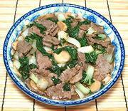

|
Beef & Bok ChoyJapan | ||||
| Serves: Effort: Sched: DoAhead: |
2 main *** 45 min Most |
A simple, easy to make but flavorful stir fry in the manner of Japanese home cooking. Quite similar to Chinese, but varies some in ingredients used in the marinade and sauce. | |||
|
9 ------ 1/8 1 2 1 1 1/2 1 1/2 ------ 14 2 ------ 1 1 1/2 1/4 1 ------ 1-1/2 |
oz --- in cl t t t t t --- oz oz --- T T T c t --- T |
Beef lean (1) -- Marinade Ginger Root Garlic Scallions Soy Sauce Sake Sesame Oil (2) Potato Starch (3) Sugar (opt) (4) --------- Bok Choy (5) Mushrooms (6) -- Sauce Oyster Sauce Sake Soy Sauce Water Sugar (opt) (4) --------- Oil |
Prep - (30 min - 10 min work)
|